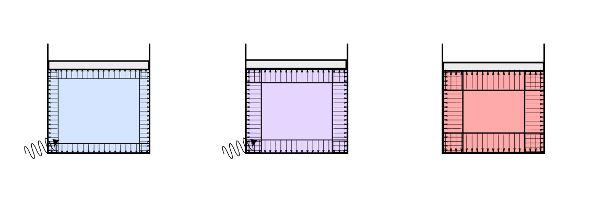
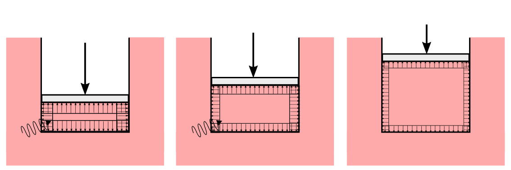
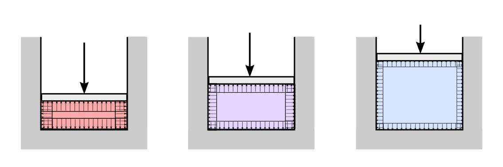

17.1. Trasformazioni termodinamiche#
…
17.1.1. Fluidi#
Per un sistema chiuso composto da un volume di fluido monofase, che manifesta lavoro interno solo nella forma \(\delta L^{i,rev} = -P dV\)
Trasformazione isocora, \(V \) cost. Per una trasformazione isocora il volume del sistema non varia, \(d V = 0\). Quindi il lavoro interno reversibile è nullo, \(\delta L^{i,rev} = - P dV = 0\). Durante questa trasformazione segue quindi che la variazione di energia interna del sistema è uguale alla somma del contributo del calore immesso nel sistema e alla dissipazione,
Nel caso di trasformazione ideale, per la quale si può trascurare la dissipazione, \(\delta^+ D = 0\),
Trasformazione isoterma, \(T \) cost. Per una trasformazione isoterna nessuno dei tre contributi di variazione di energia, calore e lavoro è nullo in generale. Il termine di calore+dissipazione lungo una trasformazione a temperatura costante \(T = \overline{T}\) assume però un’espressione molto semplice
Nel caso di trasformazinoe ideale, per la quale si può trascurare la dissipazione, \(\delta^+ D = 0\), questo termine corrispende al calore immesso nel sistema, \(T d S = \delta Q\), e quindi
Trasformazione isobara, \(P \) cost. Per una trasformazione isobara nessuno dei tre contributi di variazione di energia, calore e lavoro è nullo in generale. Il termine di lavoro interno ideale lungo una trasformazione a temperatura costante \(T = \overline{T}\) assume però un’espressione molto semplice
Nel caso di trasformazinoe ideale, per la quale si può trascurare la dissipazione, \(\delta^+ D = 0\), e di trasformazione sufficientemente lenta da poter trascurare le variazioni di energia cinetica del sistema rispetto alle variazioni di energia interna, questo termine corrispende al lavoro fatto dal sistema,
o per una trasformazione finita
avendo definito il lavoro fatto dal sistema sull’ambiente esterno \(L\) come l’opposto del lavoro fatto dall’ambiente esterno sul sistema \(L^e\), \(L = - L^e\).
Trasformazione adiabatica, \(\delta Q = 0\). In una trasformazione adiabatica, senza apporto di calore, la variazione dell’energia interna è uguale all’opposto del lavoro interno del sistema o, nelle stesse ipotesi di contributo cinetico trascurabile discusse per le trasformazioni isobare, uguale al lavoro fatto dall’ambiente sul sistema
Nel caso di trasformazione ideale, \(\delta^+ D = 0\), \(\delta L^i = \delta L^{i,rev} = P dV\), si ottiene una trasformazione isentropica (Se \(\delta Q = 0\) e \(\delta^+ D = 0\) segue \(dS = 0\), vedi sotto) e l’espressione della variazione di energia
Trasformazione isentropica, \(S \) cost. Una trasformazione isentropica è una trasformazione adiabatica ideale, senza dissipazione. Infatti, per una trasformazione adiabatica \(\delta Q = 0\), per una trasformazione senza dissipazione \(\delta^+ D = 0\) e segue immediatamente
17.1.1.1. Gas ideali#
Per un gas ideale si può utilizzare la sua equazione di stato
e l’espressione dell’energia interna in funzione solo della temperatura todo riferimento
e ottenere dei risultati un po” più espliciti. In questa sezione vengono considerate trasformazioni ideali e con termini cinetici trascurabili.
Trasformazione isocora, \(V \) cost. La condizione di volume costante e sistema chiuso - massa costante - in condizioni di grandezze fisiche uniformi nello spazio corrisponde alla condizione di densità costante,
La legge dei gas quindi impone un legame lineare tra pressione e temperatura del sistema durante la trasformazione, \(P = \overline{\rho} R_g T\).
Il lavoro è identicamente nullo, \(d L^ì = 0\) e quindi la variazione di energia corrisponde alla variazione di calore immesso nel sistema
da cui si può ricavare la variazione di entropia in funzione della variazione della temperatura,
La trasformazione può essere rappresentata nei piani termodinamici \(P-V\) e \(T-S\) come delle curve parametrizzabili con un parametro libero,
 |
Trasformazione isoterma, \(T \) cost. Per una tasformazione isoterma \(P = \rho R_g \overline{T} = \frac{\overline{m}}{V} R_g \overline{T}\). La variazione di energia interna è nulla, poiché \(dT = 0\) implica \(d E = m c_v dT = 0\). Seque quindi che il lavoro fatto dal sistema è uguale al calore immesso in esso. Nel caso ideale
da cui si può ricavare la variazione di entropia come
La trasformazione può essere rappresentata nei piani termodinamici \(P-V\) e \(T-S\) come delle curve parametrizzabili con un parametro libero,
 |
Trasformazione isobara, \(P \) cost.
…
La trasformazione può essere rappresentata nei piani termodinamici \(P-V\) e \(T-S\) come delle curve parametrizzabili con un parametro libero,
Trasformazione isentropica, \(S \) cost. Una trasformazione isentropica - adiabatica ideale con \(\delta Q = 0\), \(\delta^+ D = 0\), \(\delta S = 0\) - la variazione di energia interna del sistema è uguale al lavoro fatto sul sistema
da cui
avendo usato le relazioni
per calcolare i rapporti
…
 |